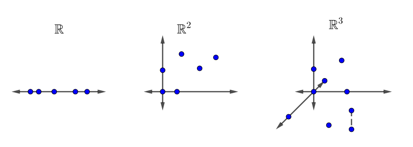
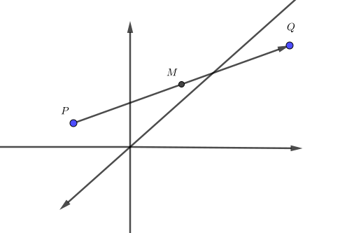
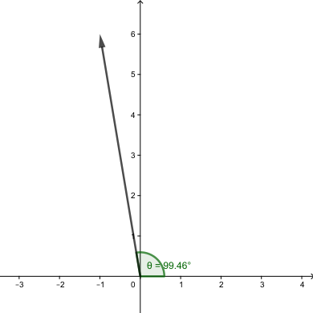
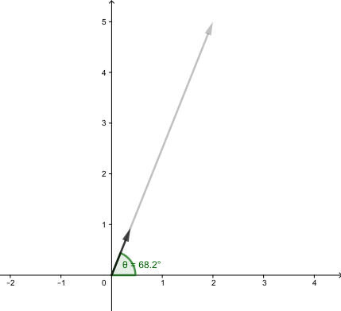
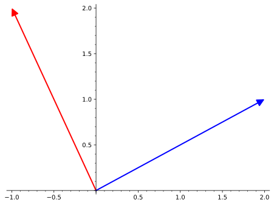

On connait tous et toutes l’ensemble des nombres réels, \(\R\text{,}\) souvent illustré par une droite. Le plan cartésien devrait aussi être familier, puisqu’il est régulièrement utilisé dans le tracé de graphique des cours de calcul. Même l’espace tridimensionnel s’imagine facilement avec les notions d’origine et d’axes similaires à celles du plan. Ces trois espaces sont illustrés à la figure 1.1.1.

Figure1.1.1.Les espaces \(\R\text{,}\)\(\R^2\) et \(\R^3\)
Dans cette section, on présente les vecteurs dans le plan cartésien \(\R^2\) et dans l’espace à trois dimensions \(\R^3\text{,}\) on présente également des opérations simples sur ces vecteurs.
Sous-section1.1.1Vecteurs à deux et à trois dimensions
Lorsqu’on parle d’un endroit sur le plan cartésien, on utilise souvent le mot «point». La notion de point renvoie à un système de référence spécifique, comprenant notamment une origine et des axes. La position du point est donnée en lien avec la distance parcourue parallèle à chaque axe en partant de l’origine pour se rendre au point.
Ce déplacement suggère une autre manière de voir la notion de point, soit en traçant une flèche entre l’origine et le point. Cette flèche est ce qui est communément appelé un vecteur. En fait, la notion de vecteur est un peu plus complexe. C’est ce que nous allons découvrir au fil du texte.
On associe souvent à un point \(P\) le vecteur \(\overrightarrow{OP}\) où \(O\) représente l’origine. Par contre, un vecteur n’a pas de localisation particulière. C’est plutôt son résultat qui est important. La différence entre un point et un vecteur est minime et dépend souvent seulement du contexte. Algébriquement, le point et le vecteur ne sont qu’une liste de nombres. On ne s’attardera pas davantage à cette différence.
Définition1.1.2.
Intuitivement, un vecteur géométrique est une flèche possédant:
une longueur, aussi appelée la norme du vecteur;
une orientation, 1
Certains auteurs vont plutôt définir la direction et le sens d’un vecteur. La direction correspond à la droite supportant le vecteur et le sens au sens de parcours de cette droite.
qui correspond aux angles que fait le vecteur avec chacun des axes de coordonnées.
Un vecteur sera souvent représenté par une lettre minuscule surmontée d’une flèche, typiquement comme \(\vec{u},\vec{v}\) et \(\vec{w}\text{.}\) On accepte aussi la demi-flèche \(\overset{\rightharpoonup} u\text{.}\)
Remarque1.1.3.
Tel que mentionné, un vecteur n’a pas de localisation précise. Le vecteur qui relie le point \((0,0)\) et \((1,1)\) est le même vecteur que celui qui relie le point \((3,5)\) au point \((4,6)\) puisque si on les considère comme des déplacements, ils sont équivalents.
Par défaut, on place un vecteur à l’origine, sauf s’il y a une utilité à le placer à un autre endroit.
Tous les vecteurs ont une grandeur, notée \(\norm{\vec{u}}\text{.}\) Un vecteur dont la norme vaut \(1\) est appelé un vecteur unitaire et est parfois dénoté avec un chapeau plutôt qu’une flèche, par exemple le vecteur \(\hat{u}\text{.}\)
Il existe un seul vecteur qui n’a pas d’orientation. C’est le vecteur nul, noté \(\vec{0}\text{.}\) L’importance de ce vecteur deviendra évidente sous peu.
Comme les vecteurs sont souvent utilisés pour représenter un déplacement, on notera le vecteur reliant le point \(P\) au point \(Q\) par \(\overrightarrow{PQ}\text{.}\)
Géométriquement, deux vecteurs sont égaux s’ils ont la même longueur et la même orientation. L’image interactive de l’exemple 1.1.4 permet de manipuler en deux dimensions trois vecteurs, dont deux sont toujours égaux. L’exemple 1.1.6, quant à lui, offre une introduction aux vecteurs en trois dimensions.
Dans la figure, les vecteurs \(\vec{u}\) et \(\vec{v}\) ont été construits pour être égaux. Il est possible de changer les vecteurs en les manipulant. Il est possible de visualiser la notion de même orientation dans cet exemple.
Instructions.
Déplacer les points \(A,B,C\) et \(P\) pour faire varier les vecteurs \(\vec{u},\vec{v}\) et \(\vec{w}\text{.}\) Il est possible d’afficher les droites générées par les vecteurs en cliquant sur la boite. On pourra ensuite déplacer les vecteurs à l’origine afin de vérifier si les orientations concordent.
Figure1.1.5.Premiers contacts avec des vecteurs géométriques
Exemple1.1.6.Des vecteurs géométriques en trois dimensions: dynamique.
On note que dans la figure, les vecteurs \(\vec{v}\) et \(\vec{t}\) sont toujours égaux. Cette figure sera aussi utilisée pour parler du concept d’addition de vecteurs dans la sous-section 1.1.2
Instructions.
Il est possible de déplacer les points \(A,B\) et \(C\) afin de changer les vecteurs. Pour ce faire, maintenir la souris au-dessus d’une lettre. Des flèches devraient apparaitre. Un clic simple sur la lettre permet de changer la direction du mouvement alors qu’un clic maintenu et un déplacement permettent de bouger la figure.
Figure1.1.7.Premiers contacts avec des vecteurs géométriques tridimensionnels
Algébriquement maintenant, il est possible de décrire un vecteur à l’aide de composantes. Ces composantes renvoient aux concepts d’origine et de base, qui seront définis dans la section Base d’un sous-espace vectoriel. L’idée est d’associer à un vecteur \(\vec{u}\) les nombres correspondant au point à son extrémité lorsque le vecteur est placé à l’origine. Ainsi, un vecteur de longueur \(1\) parallèle à l’axe des abscisses serait décrit comme \(\vec{u}=(1,0)\text{.}\) On verra aussi prochainement l’utilité de la notation \(\vec{u}=\begin{pmatrix} 1\\0 \end{pmatrix}\text{.}\)
Si \(\vec{u}=(u_1,u_2)\) est un vecteur de \(\R^2\text{,}\) alors
C’est une conséquence immédiate du théorème de Pythagore, comme l’illustre la figure 1.1.8. Pour les vecteurs de \(\R^3\text{,}\) on peut montrer qu’une formule similaire s’applique (voir exercice 1.1.4.2), c’est-à-dire que \(\norm{\vec{u}}=\sqrt{u_1^2+u_2^2+u_3^2}\text{.}\)
Algébriquement, deux vecteurs sont égaux s’ils ont les mêmes composantes.
Il est plus difficile de caractériser l’orientation d’un vecteur algébriquement. Toutefois, dans \(\R^2\text{,}\) il suffit d’un angle. Par convention, on choisit l’angle que fait le vecteur avec l’horizontale, mesuré dans le sens antihoraire. On appelle souvent cet angle l’angle polaire. Il est aussi illustré à la figure 1.1.8. C’est un exercice simple de trigonométrie de calculer l’angle d’un vecteur dans \(\R^2\text{,}\) mais il y a toutefois des exceptions à considérer. En général, l’équation
donne une relation entre l’angle et les composantes du vecteur, pourvu que \(x\neq 0\text{.}\) La fonction \(\arctan\) permet d’obtenir l’angle, mais il faudra parfois ajuster selon le quadrant avec un terme \(+\pi\text{.}\)
Pour les vecteurs dans \(\R^3\text{,}\) on définit la notion de cosinus directeurs (voir l’exercice 1.2.4.10).
Un vecteur algébrique quelconque. Ses coordonnées \(u_1\) et \(u_2\) sont illustrées de même que l’angle polaire.
Figure1.1.8.Un vecteur algébrique
Exemple1.1.9.L’angle polaire de vecteurs de dimension 2.
Considérons le vecteur \(\vec{u}=(4,5)\text{,}\) illustré à la figure 1.1.10. Comme on cherche l’angle que fait le vecteur avec l’horizontale, il suffit de faire une fonction \(\arctan\) pour y arriver:
Considérons maintenant \(\vec{u}=(2,-3)\text{,}\) illustré à la figure 1.1.11. Comme ce vecteur est dans le quatrième quadrant, son angle sera donné par \(2\pi\) (ou \(360^{\circ}\)) moins l’angle bleu \(\phi\text{.}\) Ce dernier peut être calculé avec la fonction \(\arctan\text{,}\) en tenant compte d’ajuster les signes:
Finalement, considérons le vecteur \(\vec{u}=(-1,4)\text{,}\) illustré à la figure 1.1.12. L’angle \(\theta\) cherché correspond à \(\pi\) (ou \(180^{\circ}\)) moins l’angle bleu \(\phi\text{.}\) Ce dernier peut aussi être calculé avec la fonction \(\arctan\text{,}\) en tenant compte d’ajuster les signes:
On termine avec des commandes Sage en lien avec la sous-section.
Calcul1.1.13.Définition de vecteurs sur Sage.
Avec Sage, il est possible de définir des vecteurs, pour ensuite les utiliser pour effectuer des calculs. On commence par nommer un vecteur en le définissant avec la commande vector. À noter que, pour faire la distinction entre les arguments de la commande et le vecteur, on utilise les crochets [ ]pour les vecteurs dans Sage. En cliquant sur "évaluer", on peut voir s’afficher le résultat de la cellule.
On rappelle ici, tel que mentionné à [provisional cross-reference: Annexesage], qu’il est possible de faire un affichage plus courant avec la commande show.
Il est possible d’accéder aux composantes d’un vecteur à l’aide des indices. Il est important de se rappeler que dans Sage, la première composante a pour indice 0.
On peut illustrer graphiquement des vecteurs à l’aide d’une commande plot. Ici, on remarque l’utilisation des virgules pour une définition simultanée de deux vecteurs. On utilise aussi le fait que, pour Sage, les graphiques peuvent s’additionner afin d’afficher plusieurs graphiques en une seule sortie.
On remarque que les vecteurs sont par défaut tracés à l’origine, ce qui est cohérent avec la remarque 1.1.3. Si l’on veut faire commencer le vecteur à un autre endroit, disons \(\vec{v}\) qui commencerait à la fin de \(\vec{u}\text{,}\) il est possible de le faire avec l’option start. Cette option sera particulièrement pratique lors de l’addition de vecteur de la sous-section Opérations sur les vecteurs.
Il est possible de calculer la norme d’un vecteur en utilisant la commande norm et l’angle à l’aide des fonctions trigonométriques usuelles.
Sous-section1.1.2Opérations sur les vecteurs
Considérons un vecteur \(\vec{u}\) quelconque et un nombre réel \(c\text{.}\) On s’intéresse à définir la multiplication de \(\vec{u}\) par \(c\text{.}\) Intuitivement, on peut voir cette multiplication comme un étirement ou une compression du vecteur original. Il semble donc logique de vouloir que son orientation soit inchangée. Alors, quelle devrait être sa longueur? À priori, on est tenté de dire que la longueur devrait être \(c\) fois la longueur de \(\vec{u}\text{,}\) mais cela pose un problème si \(c<0\text{.}\)
Avant d’aller plus loin, on essaie de donner un sens à la multiplication par un nombre négatif. Pour ce faire, on considère une valeur positive de \(c\) et on la laisse s’approcher de \(0\text{.}\) L’exemple 1.1.14 permet de voir ce concept.
L’intuition semble dire que la multiplication par un nombre négatif renverserait l’orientation du vecteur afin de continuer le comportement.
Exemple1.1.14.La multiplication par un scalaire: dynamique.
Dans la figure, le vecteur \(\vec{u}\) est donné. Il est possible de changer le vecteur en le manipulant. En cliquant sur les différentes boites, on peut se donner l’intuition nécessaire pour la multiplication d’un vecteur par un nombre négatif.
Instructions.
Déplacer le vecteur \(\vec{u}\) et cliquer sur la boite pour faire apparaitre le vecteur \(c\vec{u}\text{.}\) Des étapes supplémentaires apparaitront qui donneront l’intuition de la multiplication par un scalaire.
Figure1.1.15.La multiplication d’un vecteur géométrique par un scalaire
En comparant une valeur positive et son opposé (négative) dans l’exemple 1.1.14, on constate que la longueur du vecteur reste la même. Cela nous mène donc à la définition suivante.
Définition1.1.16.Multiplication par un scalaire.
Soit \(\vec{u}\) un vecteur et \(c\) un nombre réel. On définit la multiplication par un scalaire de \(\vec{u}\) par \(c\text{,}\) notée simplement \(c\vec{u}\text{,}\) comme étant le vecteur tel que :
\(\norm{c\vec{u}}=\abs{c}\norm{\vec{u}}\text{;}\)
l’orientation de \(c\vec{u}\) est :
la même que celle de \(\vec{u}\) si \(c>0\text{;}\)
n’existe pas si \(c=0\text{,}\) car il devient le vecteur nul;
d’angles différents de \(180^\circ\) des angles de \(\vec{u}\) si \(c<0\text{.}\)
Dans la remarque 1.1.3, on a défini la notion de vecteur unitaire comme étant un vecteur dont la norme vaut \(1\text{.}\) Or si \(\vec{v}\) est un vecteur non nul quelconque, on peut facilement, à l’aide de la multiplication par un scalaire, obtenir un vecteur unitaire noté \(\hat{v}\text{,}\) ayant la même orientation que \(\vec{v}\text{.}\) En effet, il suffit de trouver \(c\in \R\) tel que \(\norm{c\vecl{v}}=1\text{.}\) Or selon la définition 1.1.16, la norme de \(c\vecl{v}\) est \(\abs{c}\norm{\vec{v}}\text{.}\) En fixant \(c=\frac{1}{\norm{\vec{v}}}\text{,}\) on obtient un vecteur unitaire
Unitariser des vecteurs est un concept important en algèbre linéaire. Cela simplifie souvent les problèmes où la longueur d’un vecteur n’est pas importante, mais où seule compte son orientation.
Si deux vecteurs non nuls \(\vec{u},\vec{v}\) ont la même orientation, alors il existe toujours \(c\in \R\) tel que \(\vec{v}=c\vec{u}\text{.}\) Ceci nous permet de définir la notion de vecteurs parallèles.
Définition1.1.17.Vecteurs parallèles.
Deux vecteurs \(\vec{u},\vec{v}\) non nuls sont parallèles s’il existe \(c\in \R\) tel que \(\vec{v}=c\vec{u}\text{.}\) On écrit alors \(\vec{u}//\vec{v}\) ou encore \(\vec{u}\parallel\vec{v}\text{.}\)
Par convention, on considère que le vecteur nul n’est parallèle à aucun vecteur 2
En théorie, on aurait aussi pu dire que le vecteur nul est parallèle à tous les vecteurs.
.
Si l’on connait les composantes d’un vecteur, disons \(\vec{u}=(u_1,u_2)\text{,}\) on peut montrer facilement que le vecteur \(c\vecl{u}=c(u_1,u_2)=(cu_1,cu_2)\) satisfait la définition 1.1.16.
Exemple1.1.18.Unitariser un vecteur.
On considère le vecteur \(\vec{u}=(1,\sqrt{3})\text{.}\) On cherche le vecteur unitaire \(\hat{u}\text{.}\)
Solution.
On commence par calculer la norme du vecteur \(\vec{u}\text{:}\)
On obtient le vecteur cherché en divisant \(\vec{u}\) par deux: \(\hat{u}=\left(\frac{1}{2},\frac{\sqrt{3}}{2}\right)\text{.}\)
Le vecteur unitaire obtenu à l’exemple 1.1.18 peut sembler familier à ceux et celles qui connaissent leur cercle trigonométrique. En effet, ce vecteur correspond au point du cercle lorsque l’angle au centre est de \(\frac{\pi}{3}\text{.}\) Puisque dans \(\R^2\text{,}\) l’orientation de tout vecteur non nul peut être caractérisée par l’angle \(\theta\) que fait le vecteur avec l’horizontale, on obtient l’équation suivante, appelée forme polaire d’un vecteur :
Avant de passer à l’addition de vecteurs, on termine sur une remarque concernant la multiplication par un scalaire.
Remarque1.1.19.
Le vecteur \((-1)\vec{u}\) s’écrit plus simplement \(-\vec{u}\text{.}\) On l’appelle le vecteur opposé à \(\vec{u}\text{.}\)
La multiplication par un scalaire est commutative, c’est-à-dire que \(c\vec{u}=\vec{u}c\text{.}\)
Si \(c\neq 0\text{,}\) la division par un scalaire est définie simplement comme étant \(\frac{\vec{u}}{c}=\frac{1}{c}\vec{u}\text{.}\)
Si l’on imagine à nouveau les vecteurs comme générant le mouvement, il est logique de vouloir combiner l’effet de deux ou plusieurs vecteurs, comme une suite de déplacements successifs. Géométriquement, cela revient à placer les flèches les unes à la suite des autres. L’exemple 1.1.20 permet de jouer avec ce concept.
Exemple1.1.20.L’addition de vecteurs: dynamique.
Dans la figure, les vecteurs \(\vec{u}\) et \(\vec{v}\) sont donnés. Il est possible de changer les vecteurs en les manipulant. En cliquant sur les différentes boites, on peut visualiser l’addition de deux vecteurs dans \(\R^2\text{.}\)
Instructions.
Déplacer les vecteurs \(\vec{u},\vec{v}\) jusqu’à l’obtention d’une configuration souhaitée et cliquer sur les boites pour faire apparaitre le vecteur somme.
Figure1.1.21.L’addition de deux vecteurs géométriques
L’exemple 1.1.20 montre que l’addition de deux vecteurs \(\vec{u},\vec{v}\) forme un triangle dont les côtés sont \(\vec{u},\vec{v}\text{ et }\vec{u}+\vec{v}\text{.}\) Un triangle congru est formé lorsque l’on considère plutôt la somme \(\vec{v}+\vec{u}\text{.}\) Ensemble, ces triangles forment un parallélogramme. En fait, dès que deux vecteurs sont non parallèles, ils engendrent un parallélogramme. L’addition des vecteurs \(\vec{u}\) et \(\vec{v}\) est l’une des diagonales de ce parallélogramme. Ce simple fait permet de comprendre beaucoup de résultats en géométrie vectorielle. De fait, l’addition de vecteurs est commutative, tout comme l’addition régulière de nombres réels.
Il est important de rappeler encore une fois que l’endroit où se trouve un vecteur n’a pas d’importance. C’est ce que le vecteur représente, le déplacement, qui compte. En se référant à la figure 1.1.7, on peut remarquer que le déplacement du vecteur \(\vec{v}\) suivi de celui par \(\vec{q}\) correspond au vecteur \(\vec{u}\text{,}\) bien que \(\vec{v}\) et \(\vec{q}\) ne soient pas consécutifs dans le dessin. Il est également possible de voir qu’un même déplacement peut être exprimé de plusieurs manières. Par exemple, l’addition \(\vec{w}+\vec{r}\) est égale à l’addition \(\vec{u}+\vec{v}\) ou encore \(\vec{u}+\vec{t}\text{.}\)
Algébriquement, pour additionner deux vecteurs, il suffit d’additionner les composantes correspondantes. Pour comprendre, on s’imagine que le vecteur \(\vec{u}=(u_1,u_2)\) est lui-même une somme des vecteurs \((u_1,0)\) et \((0,u_2)\text{.}\) Si l’on a un deuxième vecteur \(\vec{v}=(v_1,v_2)\) décomposé de la même manière, il est possible de voir que la somme \(\vec{u}+\vec{v}\) correspond à une suite de déplacements horizontaux et verticaux. La figure 1.1.22 permet de visualiser le concept.
Les vecteurs \(\vec{u}\) et \(\vec{v}\) sont illustrés en triangle ainsi que le vecteur somme. Chacun des vecteurs \(\vec{u}\) et \(\vec{v}\) est décomposé selon l’horizontale et la verticale. Le vecteur somme correspond à l’addition des composantes horizontales et verticales
La commutativité de l’addition vectorielle, de même que plusieurs autres propriétés (voir l’exercice 1.1.4.12), se déduisent immédiatement des propriétés équivalentes pour l’addition de nombres réels. L’image interactive de l’exemple 1.1.23 permet de visualiser géométriquement l’associativité de l’addition vectorielle.
Exemple1.1.23.L’associativité de l’addition vectorielle: dynamique.
Dans la figure, les vecteurs \(\vec{u},\vec{v}\) et \(\vec{w}\) sont donnés. Il est possible de changer les vecteurs en les manipulant. En cliquant sur les différentes boites, on peut visualiser l’associativité de l’addition vectorielle.
Instructions.
Déplacer les vecteurs \(\vec{u},\vec{v}\) et\(\vec{w}\) jusqu’à l’obtention d’une configuration souhaitée et cliquer sur les boites pour faire apparaitre les autres vecteurs.
Figure1.1.24.L’associativité de l’addition vectorielle
Qu’en est-il de la soustraction de vecteurs? Algébriquement, il est intuitif de définir la soustraction \(\vec{u}-\vec{v}\) comme étant l’addition de \(\vec{u}+(-\vec{v})\text{.}\) Cela revient donc à soustraire aux composantes de \(\vec{u}\) les composantes correspondantes de \(\vec{v}\text{.}\)
Géométriquement, où se situe cette soustraction de vecteurs? À l’exemple 1.1.20, on a observé que l’addition de vecteurs peut être représentée par la diagonale d’un parallélogramme. Dans l’exemple 1.1.25, on constate que la soustraction de vecteurs correspond à l’autre diagonale. Le sens de la flèche dépendra de l’ordre de la soustraction.
Exemple1.1.25.Soustraction de vecteurs: dynamique.
Dans la figure, les vecteurs \(\vec{u}\) et \(\vec{v}\) sont donnés, ainsi que leur addition. Il est possible de changer les vecteurs en les manipulant. En cliquant sur les différentes boites, on peut visualiser les soustractions de deux vecteurs.
Instructions.
Déplacer les vecteurs \(\vec{u},\vec{v}\) jusqu’à l’obtention d’une configuration souhaitée et cliquer sur les boites pour faire apparaitre les vecteurs illustrant les soustractions.
Figure1.1.26.Soustraction de deux vecteurs géométriques
On remarque que le vecteur correspondant à \(\vec{u}-\vec{v}\) est le vecteur tel que \(\vec{v}+(\vec{u}-\vec{v})=\vec{u}\text{.}\) Le parallélogramme illustre bien cette interprétation.
Lorsque deux points \(P(p_1,p_2)\) et \(Q(q_1,q_2)\) sont donnés, on peut définir algébriquement le vecteur \(\overrightarrow{PQ}\) comme étant
En particulier, si \(A(a_1,a_2),B(b_1,b_2),C(c_1,c_2)\) et \(D(d_1,d_2)\) sont quatre points de \(\R^2\text{,}\) les vecteurs \(\vecl{AB}\) et \(\vecl{CD}\) sont égaux si \((b_1-a_1,b_2-a_2)=(d_1-c_1,d_2-c_2)\text{.}\)
Regardons maintenant un exemple algébrique d’addition et de soustraction de vecteurs.
Exemple1.1.27.Additions et soustractions de vecteurs.
Soit \(\vec{u}=\begin{pmatrix} 4\\-3\\2\end{pmatrix}\) et \(\vec{v}=\begin{pmatrix}1\\ -2\\-1\end{pmatrix}\) des vecteurs. On calcule \(\vec{u}+\vec{v}\) et \(2\vec{u}-\vec{v}\text{.}\)
Solution1.
Il suffit de calculer directement en utilisant la multiplication par un scalaire et l’addition/soustraction composante par composante. Pour \(\vec{u}+\vec{v}\text{,}\) on a
Il est possible de considérer les vecteurs comme étant une opération de translation agissant sur les points. Par exemple, le vecteur \(\vec{u}=\vecl{PQ}\) peut être interprété comme la translation du point \(P\) jusqu’au point \(Q\) le long d’une droite. On écrira alors parfois
qui est en fait une forme abrégée, mais somme toute équivalente, de l’équation purement vectorielle \(\vecl{OQ}=\vecl{OP}+\vecl{PQ}\text{.}\) Cette dernière est simplement une réécriture de l’équation (1.1.3).
En utilisant cette équivalence entre points et vecteurs, on en arrive à poser quatre postulats, qui forment les axiomes initiaux de la géométrie:
Liste1.1.28.Axiomes de la géométrie vectorielle
Étant donné deux points \(P,Q\text{,}\) il existe un seul vecteur \(\vec{u}\) tel que \(\vec{u}=\vecl{PQ}\text{.}\)
Si \(\vecl{PQ}=\vecl{PR}\text{,}\) alors nécessairement \(Q=R\text{.}\)
De même, si \(\vecl{PQ}=\vecl{RQ}\text{,}\) alors nécessairement \(P=R\text{.}\)
\(\vecl{PQ}+\vecl{QR}=\vecl{PR}\) (Loi de Chasles).
À partir de ces axiomes, on peut déduire d’autres résultats élémentaires (voir l’exercice 1.1.4.8). Deux résultats particulièrement importants sont \(\vecl{PP}=\vec{0}\) et \(\vecl{QP}=-\vecl{PQ}\text{.}\)
On termine avec des commandes Sage en lien avec la sous-section.
Calcul1.1.29.Opérations sur les vecteurs avec Sage.
Il est possible de multiplier un vecteur par un scalaire et d’additionner et soustraire des vecteurs de manière intuitive avec Sage.
Visuellement, il est possible d’illustrer l’addition et la soustraction avec les commandes apprises à l’exemple 1.1.13.
Sous-section1.1.3Utilisation de méthodes vectorielles en géométrie
Les vecteurs permettent de traduire des résultats de la géométrie en concepts algébriques. Souvent, les méthodes vectorielles simplifient la démonstration de ces résultats. Dans beaucoup d’exemples et d’exercices, il sera utile de suivre le conseil 1.1.30.
Conseil1.1.30.Établir son propre cadre.
Dans les problèmes géométriques, il sera souvent de considérer les points suivants:
Souvent, l’endroit précis où l’origine se trouve n’est pas important. Si une origine n’est pas fixée, cela peut être utile de déterminer un endroit approprié pour la placer.
Déterminer un certain nombre de vecteurs importants et exprimer les autres vecteurs en fonction de ceux-ci est parfois utile.
Dans un dessin, l’horizontale et la verticale n’auront peut-être pas la signification usuelle (celle d’un plan cartésien par exemple). Afin d’illustrer cet aspect, considérer la figure 1.1.32.

La figure montre les points \(P\) et \(Q\) qui sont reliés par un vecteur. Le point milieu entre \(P\) et \(Q\) est aussi illustré. La figure est dans une perspective à trois dimensions.
Figure1.1.31.Un vecteur à trois dimensions
La figure montre les points \(P\) et \(Q\) qui sont reliés par un vecteur. Le point milieu entre \(P\) et \(Q\) est aussi illustré. La figure est dans une perspective à deux dimensions
Figure1.1.32.Un vecteur à trois dimensions dessiné en deux dimensions
Les exemples qui suivent donnent quelques-unes des applications vectorielles à la géométrie. D’autres sont aussi données dans les exercices.
Exemple1.1.33.La distance entre deux points.
Soit deux points \(P\) et \(Q\text{.}\) Comment calculer la distance entre ces deux points?
En considérant le vecteur reliant \(P\) à \(Q\text{,}\) on constate que sa norme donne la distance entre les points. 3
Dans le reste du texte, on utilise la notation \(d(\text{objet}_1,\text{objet}_2)\) pour dénoter la distance entre \(\text{objet}_1\) et \(\text{objet}_2\text{.}\) Ces objets peuvent être des points, des droites, des plans, etc.
La figure ci-dessous montre l’effet du conseil 1.1.30. La position des points n’est pas vraiment importante pour répondre à la question. Le dessin est là pour aider à visualiser, tout simplement.
Instructions.
Appuyer sur le bouton pour changer le cadre de référence de la figure et éliminer les éléments superflus.
Figure1.1.34.Changer le cadre de référence
Dans le prochain exemple, on utilise une stratégie particulièrement utile en algèbre linéaire. Celle-ci est détaillée avant l’exemple.
Conseil1.1.35.Le 3D n’est pas toujours en trois dimensions.
Dans beaucoup de problèmes, on fera affaire avec des vecteurs à trois dimensions (et même plus, voir la section 1.4). Par contre, cet aspect multidimensionnel n’est pas toujours nécessaire pour répondre à la question. Si l’on cherche la distance entre deux points, qu’ils soient en deux ou trois dimensions, on peut toujours les relier par des droites. Ceci signifie donc que, pour la question, on peut illustrer tous les éléments importants du problème sur un plan à deux dimensions.
Exemple1.1.36.Partage d’un segment.
Soit \(P(-1,3,-5)\) et \(Q(2,-3,4)\text{,}\) deux points dans \(\R^3\text{.}\)
On souhaite partager le segment \(PQ\) en deux parties congrues en trouvant le point milieu. Pour cela, il suffit de réaliser que le point \(M\) peut être obtenu à partir de \(P\) en lui ajoutant la moitié du vecteur \(\vecl{PQ}\text{.}\) Ainsi
En général, on peut toujours se rendre à un point \(X\) entre \(P\) et \(Q\text{,}\) situé à \(x\in [0,1]\) fois la longueur de \(\vecl{PQ}\) à l’aide de la formule
Déplacer le curseur pour obtenir le point situé à une proportion \(x\) du segment \(PQ\text{.}\)
Figure1.1.37.Proportion d’un segment
Définition1.1.38.
Un lieu géométrique est un ensemble de points possédant une propriété commune. Un cercle, une ellipse, une parabole, etc. sont des exemples de lieux géométriques. La plupart du temps, ces lieux sont caractérisés par une équation algébrique.
On peut aussi caractériser vectoriellement certains lieux géométriques.
Exemple1.1.39.Le cercle, vu vectoriellement.
Il est possible de définir algébriquement un cercle de rayon \(r\) centré à l’origine par l’équation
On peut également caractériser un tel cercle vectoriellement. Un cercle constitue l’ensemble des points qui sont à une distance \(r\) d’un centre \(C\text{.}\) Vectoriellement, on peut traduire cette phrase par une équation avec la norme. Ainsi, un cercle centré en \(C(a,b)\) est formé de l’ensemble des points \(P(x,y)\) pour lesquels
On termine avec l’utilisation de Sage pour résoudre des problèmes géométriques.
Calcul1.1.40.Utilisation de Sage dans la résolution de problèmes de géométrie vectorielle.
On considère le problème suivant. Soit \(ABCD\text{,}\) un quadrilatère quelconque et \(MNPQ\text{,}\) le quadrilatère obtenu en joignant les points milieux des segments de \(ABCD\text{.}\) Montrer que \(MNPQ\) est un parallélogramme.
Afin de développer l’intuition nécessaire pour résoudre le problème, il est utile de dessiner certains cas pour voir comment procéder. À travers cet exemple, on explore la commande polygon qui permet de tracer un polygone étant donnée une liste de points ou de vecteurs.
On pourrait d’abord vérifier l’énoncé pour un quadrilatère simple, comme un rectangle. On définit donc les points \(A,B,C,D\) et on calcule à partir de ceux-ci les points \(M,N,P,Q\text{.}\) Par la suite, on trace les deux quadrilatères à l’aide de la commande polygon.
On essaie maintenant avec un quadrilatère moins régulier. Le code est le même, sauf pour la définition des points \(A,B,C,D\) initiaux.
A-t-on été chanceuses et chanceux avec ces exemples? Pour se convaincre que non, on propose de créer un quadrilatère aléatoire qu’il sera possible de tester autant de fois que souhaité. La commande ZZ.random_element(a,b) permet de générer un entier (ZZ dans Sage) dans l’intervalle \((a,b)\text{.}\) Lors de certaines exécutions, le quadrilatère sera dégénéré (un triangle ou même une ligne) ou encore, on se retrouvera avec un croisement de deux de ses côtés (dans ce cas, le résultat pourrait être faux). Si cela se produit, ignorer et exécuter à nouveau la cellule. L’exercice [provisional cross-reference: exercice sage assurer quadrilatère] s’intéresse à peaufiner le code afin que le quadrilatère formé soit toujours valide.
On est maintenant prêt à démontrer le résultat, en s’appuyant sur l’intuition géométrique offerte par les graphiques Sage. On veut montrer que \(\vecl{MN}=\vecl{QP}\) et \(\vecl{MQ}=\vecl{NP}\text{.}\) Puisque
Puisque les membres de droite des équations (†) et (††) sont égaux, les vecteurs \(\vecl{NP}\) et \(\vecl{MQ}\) sont égaux.
Les éléments importants de cette section sont:
Un vecteur est un objet composé d’une longueur et d’une orientation;
Algébriquement, la norme (1.1.1) d’un vecteur est donnée par la racine carrée de la somme de ses composantes au carré, ou l’équivalent dans \(\R^3\text{;}\)
Dans \(\R^2\text{,}\) l’orientation peut être caractérisée par l’angle \(\theta\) que fait le vecteur avec l’horizontale, mesuré dans le sens antihoraire;
Les opérations de multiplication d’un vecteur par un scalaire et d’addition/soustraction de vecteurs.
De plus, avec Sage:
Pour définir un vecteur, on utilise vector([u1,u2]), ou une commande similaire pour \(\R^3\text{.}\) En particulier, le vecteur doit être mis entre crochets dans la commande vector();
Il est possible de définir le point de départ \((x,y)\) du vecteur avec l’option start de la commande plot(vector([u1,u2]),start=(x,y));
Pour accéder aux composantes d’un vecteur, on utilise la notation crochet u[k], en se rappelant que la première composante a comme indice 0;
On peut calculer la norme d’un vecteur à l’aide de la commande norm();
On peut illustrer graphiquement un vecteur à \(2\) ou \(3\) dimensions avec une commande plot();
Les opérations sur les vecteurs sur Sage se font de manière naturelle, en utilisant +,-,*.
Exercices1.1.4Exercices
1.
Considérer les vecteurs \(\vec{u}=(2,5)\) et \(\vec{v}=(-3,1)\text{.}\) Calculer algébriquement les vecteurs suivants, représenter-les dans un plan cartésien et calculer l’orientation et la longueur.
On trace le vecteur \(\vec{u}+\vec{v}=(-1,6)\) à l’origine pour connaitre son direction approximative. On voit qu’il est dans le deuxième quadrant. On trouvera donc l’angle aigu (\(\alpha\)) avec la trigonométrie et on lui additionnera l’angle droit. On utilise toujours \(\arctan\) puisqu’on connait les côtés adjacent et opposé à l’angle \(\alpha\text{.}\)

Figure1.1.41.Le vecteur résultat et son orientation
On trace le vecteur \(\vec{v}-\vec{u}=(-5,-4)\text{.}\) On remarque qu’il s’agit du vecteur opposé à celui de la question précédente. On va utiliser cette information pour gagner du temps. Sa longueur est identique et son orientation est de \(180^{\circ}\) de plus (ou moins!).
Figure1.1.43.Le vecteur résultat et son orientation
On trace le vecteur \(-2\vec{u}=(-4,-10)\) à l’origine pour connaitre son direction approximative. On voit qu’il est dans le troisième quadrant. On trouvera donc l’angle aigu (\(\alpha\)) avec la trigonométrie et on lui additionnera les \(180^{\circ}\) manquants.
Figure1.1.44.Le vecteur résultat et son orientation
On trace le vecteur \(\frac{\vec{u}}{\norm{\vec{u}}}=\left(\frac{2}{\sqrt{29}},\frac{5}{\sqrt{29}}\right)\) et on voit qu’il se trouve dans le premier quadrant. On remarque que ce vecteur correspond au vecteur \(\vec{u}=(2,5)\) que l’on a multiplié par le scalaire \(1\) sur sa norme. C’est ainsi qu’on \emph{unitarise} un vecteur. Son orientation sera la même que le vecteur \(\vec{u}\) qu’on a tracé plus pâle pour les visualiser ensemble.

Figure1.1.47.Le vecteur résultat et son orientation
On trace le vecteur \(\frac{\vec{u}+\vec{v}}{\norm{\vec{u}+\vec{v}}}=\left(\frac{-1}{\sqrt{37}},\frac{6}{\sqrt{37}}\right)\) et on voit qu’il se trouve dans le deuxième quadrant. Il s’agit encore une fois d’un vecteur unitaire. C’est celui du premier exercice de ce numéro. On en connait donc déjà l’orientation et la longueur.
Figure1.1.48.Le vecteur résultat et son orientation
Soit un vecteur \(\vec{u}=(a,b,c)\in\R^3\) allant de l’origine jusqu’au point \(B(a,b,c)\text{.}\) Démontrer que la longueur de ce vecteur est donnée par: \(\norm{\vec{u}}=\sqrt{a^2+b^2+c^2}\text{.}\)
Indice.
Pour vous aider, voici une représentation graphique de ce vecteur dans l’espace cartésien.
Instructions.
Déplacer le vecteur et cliquer sur l’indice pour plus d’aide.
Figure1.1.49.Le vecteur \(\vec{u}\) dans l’espace
Solution.
Le théorème de Pythagore et le concept de projection suffisent pour démontrer cette formule. On considère tout d’abord le vecteur \(\vec{u}_{XY}\text{,}\) la projection de \(\vec{u}\) sur le plan \(XY\text{.}\) Il est évident que \(\vec{u}_{XY}=(a,b,0)\text{.}\) Ainsi, par Pythagore, la longueur de ce vecteur est:
La longueur de \(\vec{u}\) est maintenant calculable en utilisant de nouveau le théorème avec le triangle à la verticale dont la première cathète est la longueur de \(\vec{u}_{XY}\) et la seconde est la composante en \(z\) de \(\vec{u}\text{:}\)
Soit le point \(P\) et le vecteur \(\vec{u}\) suivants. Déplacer les points \(P_1\) à \(P_5\) afin qu’ils correspondent aux descriptions suivantes. Noter qu’il peut y avoir plusieurs réponses valides.
Il n’y a qu’une réponse possible, sauf pour \(P_3\) où il y en a une infinité. L’explication vous permettra de visualiser l’ensemble des réponses possibles.
Instructions.
Figure1.1.51.L’espace du problème avec solution
On doit partir de \(P\) et effectuer un déplacement correspondant à \(\vec{u}\) pour arriver à \(P_1\text{.}\)
On doit partir de \(P_2\) et effectuer un déplacement correspondant à 2 fois \(\vec{u}\) pour arriver à \(P\text{.}\)
On doit placer \(P_3\) de telle sorte que sa distance à \(P\) est égale à la longueur de \(\vec{u}\text{.}\) Il y a une infinité de réponses possibles puisqu’on peut le placer n’importe où sur le cercle de rayon \(\norm{\vec{u}}\) autour de \(P\text{.}\)
On doit placer \(P_4\) de telle sorte que le déplacement de \(P\) à \(P_4\) soit le même que de \(P_4\) à \(P\text{.}\) En manipulant les outils, on voit que, si l’on place \(P_4\) d’un côté de \(P\text{,}\) les vecteurs \(\vecl{PP_4}\) et \(\vecl{P_4P}\) sont de sens opposés. Ils ne peuvent donc jamais être égaux. La seule façon d’avoir \(\vecl{PP_4}=\vecl{P_4P}\) est de placer \(P_4\) sur \(P\text{.}\) Ainsi,
On doit partir de \(P\) et effectuer un déplacement correspondant à 3 fois \(\vec{u}\) dans le sens opposé pour arriver à \(P_5\text{.}\)
4.
Soit le point \(P\) et le vecteur \(\vec{u}\) tels qu’illustrés. On indique que \(\norm{\vec{u}}=1\text{.}\) Décrire le lieu géométrique de l’ensemble des points \(Q\) répondant à chaque expression.
\(\displaystyle \norm{\vecl{PQ}}=\norm{\vec{u}}\)
\(\displaystyle \norm{\vecl{PQ}}\leq 2\)
\(\displaystyle 1\leq\norm{\vecl{PQ}}\leq 3\)
\(\displaystyle \vecl{PQ}=c\vec{u}, c\in\R\)
\(\vecl{PQ}\) a la même orientation que \(\vec{u}\)
\(\displaystyle \vecl{PQ}=c\vec{u}, c\in\Z\)
Instructions.
Figure1.1.52.L’espace du problème
Réponse.
Le cercle de centre \(P\) et de rayon 1.
Le disque de centre \(P\) et de rayon 2.
L’anneau de centre \(P\text{,}\) de rayon extérieur 3 et de rayon intérieur 1.
La droite parallèle à \(\vec{u}\) et passant par \(P\text{.}\)
La demi-droite issue de \(P\) dans l’orientation de \(\vec{u}\) excluant \(P\text{.}\)
L’ensemble des points sur la droite parallèle à \(\vec{u}\) et passant par \(P\) qui sont à une distance entière de \(P\text{.}\) Cela inclut le point \(P\text{.}\)
5.
Soit \(A\) et \(B\text{,}\) deux points distincts dans l’espace (\(\R^3\)). Décrire le lieu géométrique de l’ensemble des points \(P\) répondant à chaque expression.
Le point \(P\) doit être le point milieu du segment \(\overline{AB}\text{.}\)
Aucun point \(P\) ne satisfait à cette condition.
Tous les points se situant sur le plan perpendiculaire à \(\overline{AB}\text{,}\) passant par le point milieu de ce même segment.
6.
Dans le parallélogramme suivant, trouver les coordonnées du point \(D\text{.}\)
Figure1.1.54.Le parallélogramme
Indice.
Il est conseillé d’identifier chaque point connu par une lettre et de calculer les composantes des différents vecteurs reliant ces points. Choisir ensuite un point de départ dont les coordonnées sont connues et se déplacer selon un vecteur en additionnant ses composantes pour aller au point dont les coordonnées sont inconnues.
Réponse.
Les coordonnées du point \(D\) sont \(D(-6,0)\text{.}\)
Solution.
Identifions les points suivants: \(A(-3,2)\text{,}\)\(B(3,-1)\) et \(C(0,-3)\) sur le dessin.
Ainsi, on a calculé les coordonnées du point \(D(-6,0)\text{.}\)
7.
Calculer les coordonnées du point \(P\) se situant aux \(3/8\) du segment \(\overline{AB}\) à partir du point \(A\text{.}\) Les coordonnées des points sont \(A(2,1,0)\) et \(B(10, 25,16)\text{.}\)
Réponse.
Les coordonnées de ce point sont \(P(5, 10, 6)\text{.}\)
Solution.
La méthode préférée ici consiste à débuter par un point connu (\(A\text{,}\) par exemple), de trouver un vecteur dans la direction où l’on veut se déplacer (\(\vecl{AB}\text{,}\) par exemple) et finalement de l’étirer à la longueur voulue. De cette démarche, on obtient la formule suivante:
Les coordonnées du point cherché sont donc \(P(5, 10, 6)\text{.}\)
8.
En utilisant les quatre axiomes initiaux de la géométrie vectorielle (1.1.28), démontrer les trois propriétés suivantes.
\(\displaystyle \vecl{AA}=\vec{0}\)
\(\displaystyle \vecl{AB}=-\vecl{BA}\)
Si \(\vecl{AB}=\vecl{CD}\text{,}\) alors \(\vecl{AC}=\vecl{BD}\text{.}\)
Solution.
L’axiome 4 appliqué au vecteur \(\vecl{AA}\) permet d’écrire \(\vecl{AA}=\vecl{AA}+\vecl{AA}\text{.}\) De ce qu’on connait de l’addition vectorielle, on peut additionner de chaque côté de l’égalité par le vecteur \(-\vecl{AA}\text{.}\) Ainsi,
\begin{align*}
\vecl{AB}&=\vecl{AB}+\vec{0}\\
&=\vecl{AB}+\vecl{BA}-\vecl{BA} &\text{ car } &\vecl{BA}-\vecl{BA}=\vec{0}\\
&=(\vecl{AB}+\vecl{BA})-\vecl{BA}\\
&=\vecl{AA}-\vecl{BA} &\text{ selon la loi de Chasles } &\knowl{./knowl/xref/li-axiomesgeo.html}{\text{1.1.28}}\\
&=\vec{0}-\vecl{BA} &\text{ selon la première partie} &\\
&=-\vecl{BA}\text{.}
\end{align*}
Sachant que \(\vecl{AB}=\vecl{CD}\text{,}\) alors,
Déplacer les vecteurs \(\vec{u}\) et \(\vec{v}\) afin que les égalités ou inégalités suivantes soient vérifiées, une à la fois. Ensuite, énoncer en mots pour chacune les conditions nécessaires à leur vérification.
\(\norm{\vec{u}+\vec{v}}\leq\norm{\vec{u}}+\norm{\vec{v}}\) (l’inégalité du triangle)
Cette inégalité se nomme l’inégalité du triangle. Elle est toujours vraie pour deux vecteurs \(\vec{u}\) et \(\vec{v}\text{.}\) Comme son nom l’indique, on la représente bien lorsque les deux vecteurs sont additionnés avec la méthode du triangle, tel que le dessin le montre. Elle signifie que la somme des longueurs des deux premiers côtés sera toujours supérieure à la longueur du dernier côté.
Les seules possibilités que cela soit faux impliquent \(\vec{u}=\vec{0}\) ou \(\vec{v}=\vec{0}\) (ou les deux!) ou lorsque les deux vecteurs ont la même orientation. Dans ce dernier cas, les trois vecteurs seraient donc sur une seule droite et l’addition de \(\vec{u}\) et \(\vec{v}\) donne un vecteur de même longueur que l’addition de leurs longueurs.
À l’inverse de la lettre précédente, cette égalité est vraie dans les trois cas donnés, mais elle ne l’est pas lorsque les deux vecteurs sont nuls. Bref, lorsque \(\vec{u}=\vec{0}\) ou lorsque \(\vec{v}=\vec{0}\) (mais pas les deux!) ou lorsque les deux vecteurs ont la même orientation.
Dans ce cas, avec les restrictions imposées, il faut absolument que les deux vecteurs soient non-nuls et aient la même orientation.
Ce dernier cas est particulier. Il faut y réfléchir ainsi: on cherche à créer un triangle avec l’addition de vecteurs et on veut que chaque côté ait la même longueur. Bref, on veut un triangle équilatéral. Il faut donc que \(\vec{u}\) et \(\vec{v}\) soient de même longueur et forment un angle de \(60^\circ\) pour que l’énoncé soit vérifié.
10.
Montrer que les diagonales de n’importe quel parallélogramme se croisent en leurs milieux.
Indice.
Utiliser les axiomes de la géométrie vectorielle (1.1.28). Le dessin suivant peut vous être utile.
Instructions.
Figure1.1.56.Les diagonales d’un parallélogramme
On peut reformuler la preuve demandée ainsi: si \(P\) est le point milieu de \(\overline{BD}\text{,}\) alors montrer que \(\vecl{AP}=\vecl{PC}=\frac{1}{2}\vecl{AC}\text{.}\) On sait donc, par la définition de point milieu, que \(\vecl{BP}=\vecl{PD}=\frac{1}{2}\vecl{BD}\text{.}\)
Solution.
Soit un parallélogramme \(ABCD\) et \(P\text{,}\) le point milieu de \(\overline{BD}\text{,}\) tel qu’illustré dans l’indice. Alors,
Soit le triangle \(ABC\) et les points \(M\) et \(N\) se trouvant respectivement au milieu des segments \(\overline{AB}\) et \(\overline{AC}\text{.}\) Montrer que \(\vecl{MN}=\frac{1}{2}\vecl{BC}\text{.}\)
Figure1.1.57.Une histoire de milieu
Indice.
Utiliser les axiomes de la géométrie vectorielle (1.1.28) et le conseil suivant: passer par un détour pour exprimer le vecteur \(\vecl{MN}\text{.}\)
Solution.
On va réécrire le vecteur \(\vecl{MN}\) en utilisant d’autres vecteurs et utiliser le fait que \(M\) et \(N\) sont des points milieux.
Les propriétés suivantes sur les vecteurs découlent naturellement de leur interprétation géométrique. Nous avons déjà vérifié certaines d’entre elles intuitivement. Dans cet exercice, démontrer algébriquement leur validité en utilisant les définitions algébriques de l’addition vectorielle \(\big((u_1,u_2)+(v_1,v_2)=(u_1+v_1, u_2+v_2)\big)\) et de la multiplication par un scalaire \(\big(c(u_1,u_2)=(cu_1,cu_2)\big)\text{.}\)
Soit \(\vec{u}=(u_1,u_2)\text{,}\)\(\vec{v}=(v_1,v_2)\) et \(\vec{w}=(w_1,w_2)\in\R^2\) et \(r\) et \(s\in\R\text{.}\) Alors,
\(\vec{u}+\vec{v}=\vec{v}+\vec{u}\) (commutativité de l’addition vectorielle)
\(\vec{u}+(\vec{v}+\vec{w})=(\vec{u}+\vec{v})+\vec{w}\) (associativité de l’addition vectorielle)
\(\vec{u}+\vec{0}=\vec{u}\) (neutre additif)
\(\vec{u}+(-\vec{u})=\vec{0}\) (inverse additif)
\((rs)\vec{u}=r(s\vec{u})\) (associativité de la multiplication par un scalaire)
\(r(\vec{u}+\vec{v})=r\vec{u}+r\vec{v}\) (distributivité sur l’addition vectorielle)
\((r+s)\vec{u}=r\vec{u}+s\vec{u}\) (distributivité de l’addition des scalaires)
Puisque l’on spécifie qu’il s’agit d’un prisme, on peut considérer que \(\vecl{AE}=\vecl{CD}=\vecl{BF}\text{.}\) De même, les deux triangles formant les bases du prisme sont parallèles et donc les vecteurs parallèles sont égaux. Par exemple, \(\vecl{AC}=\vecl{ED}\text{.}\)
Ainsi, pour exprimer le déplacement correspondant à \(\vecl{AC}+\vecl{AE}\text{,}\) il faut considérer que \(\vecl{AE}=\vecl{CD}\) et donc que \(\vecl{AC}+\vecl{AE}=\vecl{AC}+\vecl{CD}=\vecl{AD}\text{,}\) en utilisant la Loi de Chasles 1.1.28:4.
Finalement, remarquer qu’il y a parfois plusieurs réponses possibles.
Réponse.
\(\displaystyle \vecl{AD}\)
\(\displaystyle \vecl{EB}\)
\(\vecl{AE}\) ou \(\vecl{BF}\) ou \(\vecl{CD}\)
\(\displaystyle \vecl{EC}\)
\(\vecl{DC}\) ou \(\vecl{EA}\) ou \(\vecl{FB}\)
\(\vecl{ED}\) ou \(\vecl{AC}\)
\(\displaystyle \vecl{AF}\)
14.
Observer le parallélipipède suivant et dire si les énoncés ci-dessous sont vrais ou faux.
Il y a plusieurs façons de raisonner pour déterminer si les vecteurs de ces énoncés sont égaux. Avant de débuter, on donne quelques principes importants pour structurer le raisonnement à l’écrit. D’abord, on veut souvent exprimer un vecteur de façon équivalente en utilisant d’autres points pour le décrire. Ensuite, on veut exprimer l’addition de vecteurs de façon équivalente avec un seul vecteur (Loi de Chasles) 1.1.28:4. Finalement, il peut arriver que l’on veuille effectuer les étapes précédentes dans l’ordre inverse et ainsi exprimer un vecteur comme l’addition de deux ou trois vecteurs afin d’expliciter comment il s’annule avec d’autres vecteurs. Noter qu’il est utile de réorganiser l’ordre de l’addition des vecteurs pour mieux communiquer ce qu’on simplifie.
\(\vecl{AH}=\vecl{BG}\) Ces vecteurs sont clairement parallèles et de même longueur. C’est donc vrai qu’ils sont égaux.
Les exercices qui suivent sont conçus pour être résolus avec Sage. Des cellules vides sont disponibles pour écrire les réponses. Évidemment, il y a plusieurs manières d’arriver aux réponses.
15.
Soit \(\vec{u}=(-1,2)\) et \(\vec{v}=(2,1)\) deux vecteurs de \(\R^2\text{.}\)
(a)
Définir et tracer les vecteurs \(\vec{u}\) et \(\vec{v}\) sur un même graphique, le vecteur \(\vec{u}\) en rouge et le vecteur \(\vec{v}\) en bleu. Les deux vecteurs partent de l’origine.
Réponse.

Figure1.1.60.Les vecteurs \(\vec{u}\) et \(\vec{v}\)
Bloc de code1.1.61.Le code solution pour l’exercice
(b)
Calculer le vecteur \(\vec{w}=2\vec{u}-3\vec{v}\) et donner sa norme.
Réponse.
Le vecteur est \(\vec{w}=(-8,1)\) et la norme est \(\lvert \vec{w}\rvert =\sqrt{65}\text{.}\)
Solution.
(c)
Tracer un parallélogramme passant par le point \(P(1,3)\) qui est engendré par les vecteurs \(\vec{u},\vec{v}\text{.}\) Utiliser des couleurs différentes pour chaque côté du parallélogramme. Identifier les vecteurs avec la commande text("texte",(x,y)) où "texte" est le nom du vecteur et \((x,y)\) sa position.
Réponse.
Figure1.1.62.Un parallélogramme engendré par les vecteurs \(\vec{u}\) et \(\vec{v}\) passant par le point \(P(1,3)\text{.}\)
Bloc de code1.1.63.Le code solution pour l’exercice
Remarquer que, pour placer certains vecteurs au bon endroit, il a fallu convertir le point \(P(1,3)\) en vecteur afin de pouvoir lui additionner un vecteur. Sage ne veut pas additionner un vecteur à un point. Votre texte est aussi probablement plus simple que la réponse donnée. Sage est capable d’utiliser un langage de traitement de texte appelé LaTeX et la bonne syntaxe a été utilisée pour avoir l’effet voulu. Ce n’est pas nécessaire pour l’exercice.
16.Automatisation de la conversion entre degrés et radians.
Le but de cet exercice est de créer deux fonctions Sage. La première, étant donné un angle \(\theta\) en degrés, va calculer la valeur de l’angle en radians. La seconde, étant donné un angle \(\theta\) en radians, va calculer la valeur de l’angle en degrés.
Plus précisément, créer une fonction nommée radians qui va prendre comme argument un nombre réel correspondant à une valeur d’angle en degrés et la convertir en radians. Ensuite, créer une fonction nommée degres qui va prendre comme argument un nombre réel correspondant à une valeur d’angle en radians et la convertir en degrés.
On aimerait maintenant modifier les fonctions afin qu’elle retourne toujours une valeur entre \(0\) et \(2\pi\) pour la fonction radians et une valeur entre \(0 \) et \(360\) pour la fonction degres.
On pourrait procéder de plusieurs manières. On choisit de créer deux fonctions, radians2pi et degres360 qui prennent chacune respectivement une valeur en radians et en degrés et la convertisse dans l’intervalle restreint d’une période. Par la suite, on appellera les fonctions créées ci-dessus pour faire la conversion.
Tester les fonctions en vérifiant que
\(\frac{-2020\pi}{3}\) radians est équivalent à \(120\) degrés;
\(\frac{-109\pi}{5}\) radians est équivalent à \(36\) degrés;
\(2020\) degrés est équivalent à \(\frac{11\pi}{9}\) radians;
\(-1988\) degrés est équivalent à \(\frac{43\pi}{45}\) radians.
Bloc de code1.1.65.La conversion d’un angle de radians à degrés
def degres360(theta): #Prend un angle en degrés et le ramène à son équivalent entre 0 et 360
if theta>=0 and theta< 360:
return theta
else:
if theta>=360:
while theta>=360:
theta=theta-360
return theta
else:
while theta<0:
theta=theta+360
return theta
degres360(390)
degres360(-60)
degres360(1988)
Bloc de code1.1.66.La conversion d’un angle en degrés à l’intervalle \([0,360[\)
def radians2pi(theta): #Prend un angle en radians et le ramène à son équivalent entre 0 et 2pi
if theta >=0 and theta <2*pi:
return theta
else:
if theta >=2*pi:
while theta >=2*pi:
theta=theta-2*pi
return theta
else:
while theta <0:
theta=theta+2*pi
return theta
radians2pi(7*pi/2)
radians2pi(19*pi/6)
radians2pi(-5*pi/3)
radians2pi(2020*pi/4)
Bloc de code1.1.67.La conversion d’un angle en radians à l’intervalle \([0,2\pi[\)
On peut ensuite convertir n’importe quel angle et le ramener sur un intervalle plus conventionel en combinant ces fonctions.
show("$\\frac{-2020\pi}{3}\equiv$",degres360(degres(-2020*pi/3))) #On convertit en degres et ensuite on ramène dans l'intervalle 0-360
show("$\\frac{-109\pi}{5}\equiv$",degres360(degres(-109*pi/5))) #On convertit en degres et ensuite on ramène dans l'intervalle 0-360
show("$2020^\circ\equiv$",radians2pi(radians(2020))) #On convertit en degres et ensuite on ramène dans l'intervalle 0-360
show("$-1988^\circ\equiv$",radians2pi(radians(-1988))) #On convertit en degres et ensuite on ramène dans l'intervalle 0-360